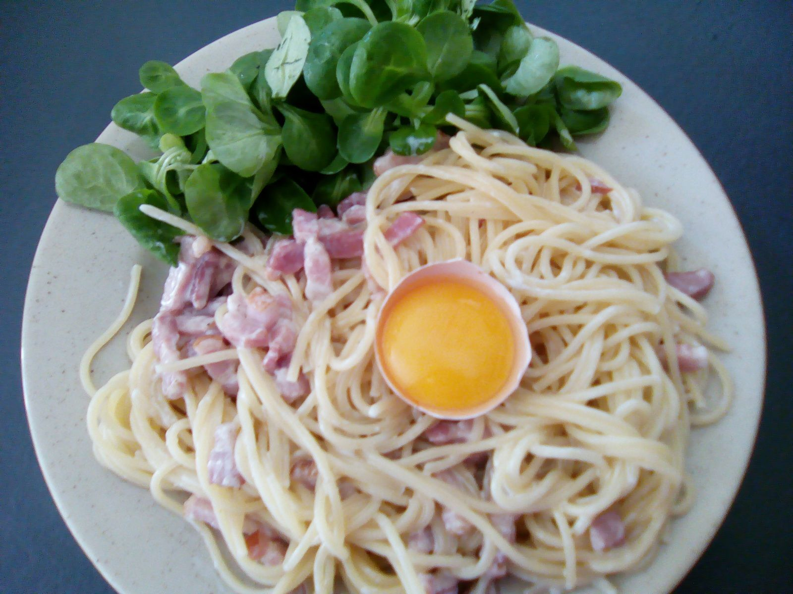

Recette carbonara

Description
Les pâtes à la carbonara sont une spécialité culinaire à base de pâtes, très souvent des spaghetti, imbibées d'une émulsion d'un peu d'eau de cuisson des pâtes avec du pecorino râpé, servies ensuite dans l'assiette avec un jaune d'œuf, du poivre noir et de la charcuterie italienne, le guanciale (joue de porc), taillée en petits lardons.
Ingrédients pour 4 personnes
- 50cl de crème fraîche
- 1 pincée de sel
- poivre
- 250g de lardons
- 1 oignon
- 500g de pâtes
- 3 jaunes d'oeufs
Etapes
- Cuire les pâtes dans un grand volume d'eau bouillante salée.
- Emincer l'oignon et le faire revenir à la poêle. Dès qu'il est bien doré, y ajouter les lardons.
- Préparer dans un saladier la crème fraîche, les oeufs, le sel, le poivre et mélanger.
- Retireer les lardons du feu dès qu'ils sont dorés et les ajouter à la crème.
- Une fois les pâtes cuite al dente, les égoutter et y incorporer la crème. Remettre sur le feu si le plat refroidi.
- Servir et bon appétit ! Vous pouvez également agrémenter votre plat avec des champignons.